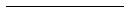
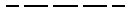

Teken-objecten:
| lijnsoort | voorbeeld | komt voor in |
|---|
| Legenda | : | de eerste 2 karakters die voor het min teken in de naam staan, verwijzen naar de hoofdgroep. |
|---|
Gebruik van algemene lijnsoorten binnen de geometrie werkmethode
op basis van NEN-ISO 128-23:1999
| objecten | lijnsoort | dikte bs * | dikte nw * | dikte vw * | voorbeeld |
|---|---|---|---|---|---|
| -arceringen -gaten, sparingen en verdiepingen (diagonalen) -korte hartlijnen | getrokken lijn | 0.18 | 0.18 | 0.18 |  |
| -zichtbare begrenzingslijnen -(landschaps)contourlijnen | getrokken lijn | 0.18 | 0.18 | 0.18 | |
| -zichtbare begrenzingslijnen -(landschaps)contourlijnen | getrokken lijn | 0.25 0.35 0.50 | 0.25 0.35 0.50 | 
| |
| -bijzondere zichtbare begrenzingslijnen -bijzondere lijnen | getrokken lijn | 0.70 | 0.70 | ||
| -niet zichtbare begrenzingslijnen | streeplijn | 0.18 | 0.18 | 0.18 | |
| -niet zichtbare begrenzingslijnen | streeplijn | 0.25 0.35 0.50 | 0.25 0.35 0.50 |  | |
| -bijzondere niet zichtbare begrenzingslijnen -bijzondere lijnen | streeplijn | 0.70 | 0.70 | 
| |
| -hartlijnen -symmetrielijnen -stramienlijnen -afbreeklijnen | gemengde streeplijn | 0.18 | 0.18 | 0.18 | 
|
| -bijzondere (begrenzings)lijnen | gemengde streeplijn | 0.25 0.35 0.50 | 0.25 0.35 0.50 | 
| |
| -bijzondere (begrenzings)lijnen -grenslijnen van gebieden, zones etc. | gemengde streeplijn | 0.70 | 0.70 | ||
| -uiterste en tussenliggende standen van bewegende delen. -zwaartelijnen | gemengde streeplijn met dubbele onderbreking | 0.18 | 0.18 | 0.18 | 
|
| -bijzondere (begrenzings)lijnen | gemengde streeplijn met dubbele onderbreking | 0.25 0.35 0.50 | 0.25 0.35 0.50 | 
| |
| -bijzondere (begrenzings)lijnen | gemengde streeplijn met dubbele onderbreking | 0.70 | 0.70 | 
| |
| -begrenzingslijnen van onderliggende of niet relevante onderdelen | stippel lijn | 0.18 | 0.25 0.35 0.50 | 0.25 0.35 0.50 | 
|
* bs = bestaand nw = nieuw vw = verwijderen